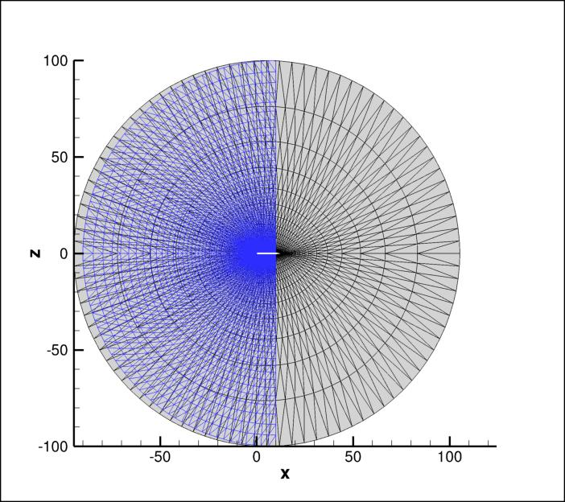
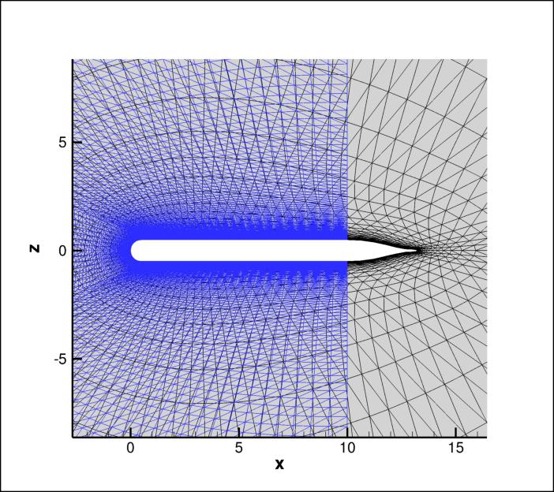
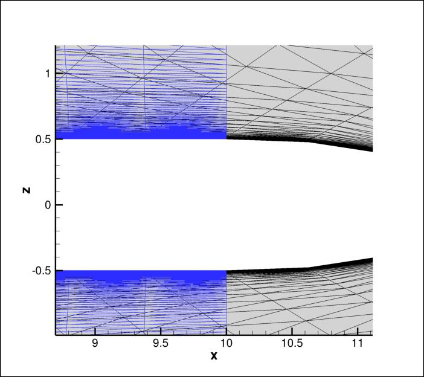

|
Langley Research CenterTurbulence Modeling Resource |
 This page under construction... Come back later!
This page under construction... Come back later!
Return to: Numerical Analysis of 3D Hemisphere Cylinder Validation Case (NEW) Intro Page
Return to: Turbulence Modeling Resource Home Page
TURBULENCE MODEL NUMERICAL ANALYSIS
Special Purpose Grid with aft closure - 3D Hemisphere Cylinder (NEW)
A grid with aft closure geometry can be generated with the following Fortran code and input file:
A coarsening program is also available to create coarser levels:
This grid has the same surface grid from x=0 to x=10 as the one described on the standard
GRIDS page. Plots below compare the two geometries/grids:



Warning: even though this closed geometry has the same
surface grid and shape as the standard grid between x=0 and x=10, in VERIFICATION exercises its results may be
slightly different because of the closed back end and different boundary conditions.
Use with caution, or else conduct verification exercises only against
other results using the same geometry and BCs.
Return to: Numerical Analysis of 3D Hemisphere Cylinder Validation Case (NEW) Intro Page Return to: Turbulence Modeling Resource Home Page
Responsible NASA Official:
Ethan Vogel
Page Curator:
Clark Pederson
Last Updated: 07/27/2017